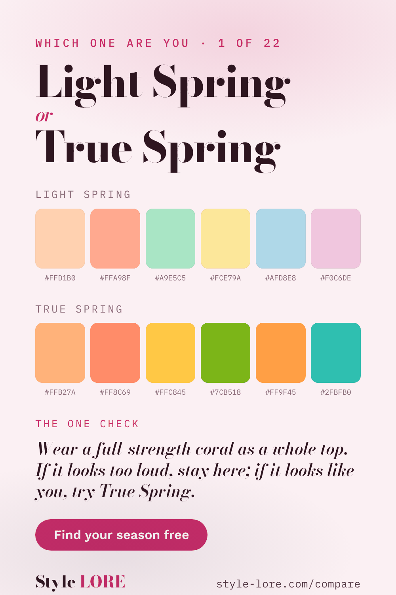

Pin 1Color Analysis
Title
Light Spring or True Spring?
Destination link
https://style-lore.com/compare/light-spring-vs-true-spring.html
Description
Both are warm, so warmth won't settle it — depth will. A True Spring wears full-strength coral as a whole piece and looks finished; a Light Spring looks overwhelmed by it. Both palettes side by side, plus a daylight self-check.
#coloranalysis #colorseason #personalstyle #capsulewardrobe #styletips